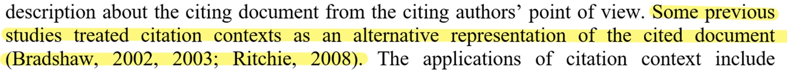
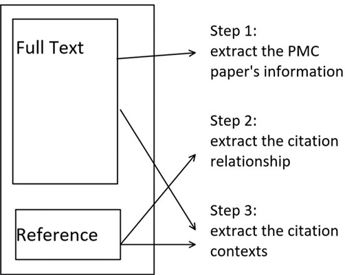
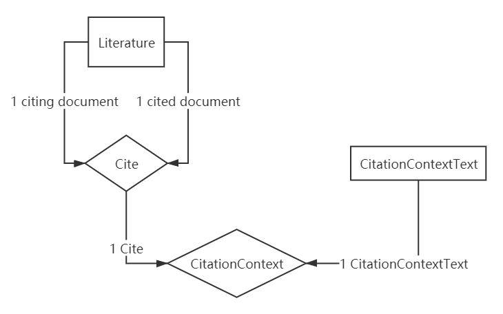
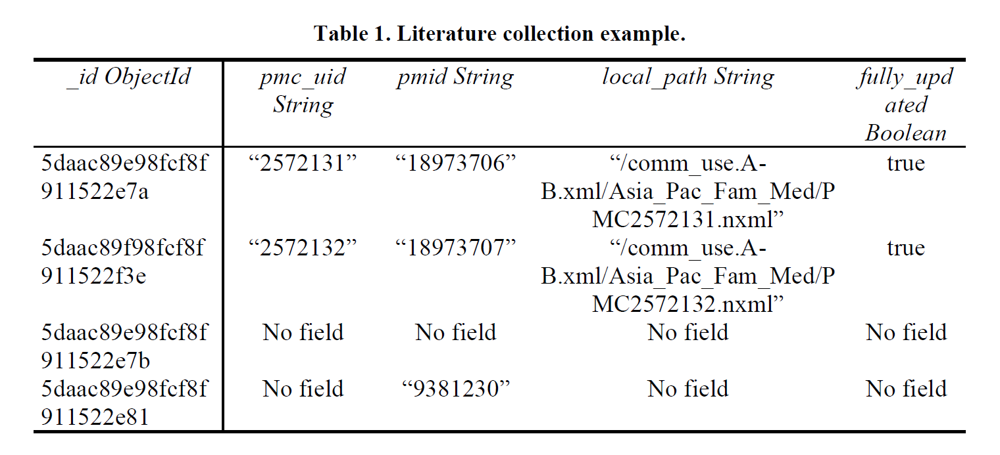
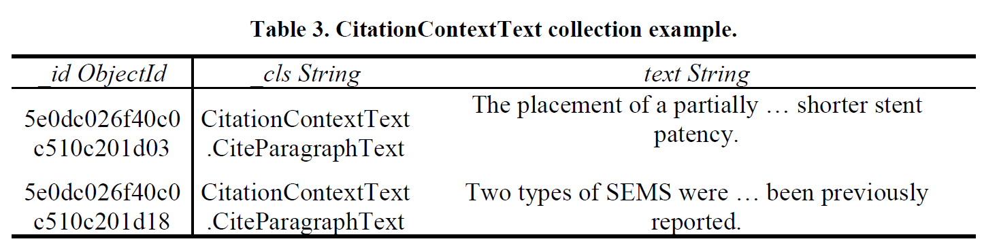
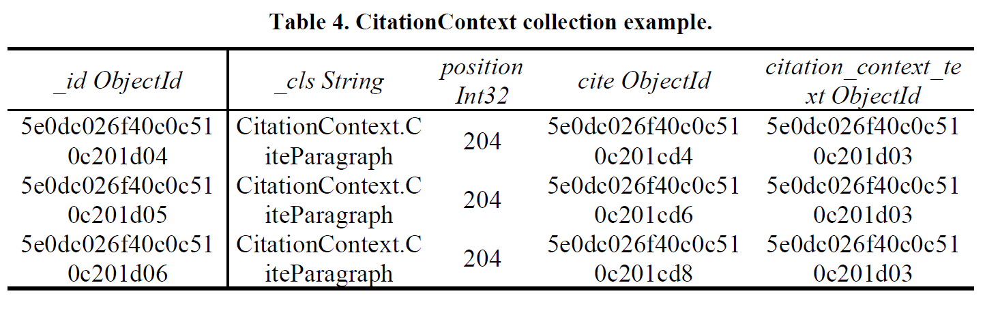

PubMed Central Citation Context Dataset
Fengjun Sun*, Yingqiu Li, Guojun Sheng, Xiaolin Yao Dalian Neusoft University of Information
What is citation context?
- Citation context is the text around the citation marker.
- e.g.

Citation context usage
- summarization
- synonym identification and disambiguation
- entity recognition and relation extraction
- curation and information retrieval
- unannotated comparable corpora
- co-word analysis
…
A few scholar datasets
- CiteSeerX (Huang, Wu, Liang, Mitra, & Giles, 2015)
- Scholarly Dataset 2 (Sugiyama & Kan, 2015)
- arXiv CS (Färber, Thiemann, & Jatowt, 2018)
- unarXive (Saier & Färber, 2020)
- ACL-ARC (Bird et al., 2008)
- ACL-AAN (Radev, Muthukrishnan, Qazvinian, & Abu-Jbara, 2013)
- PubMed Central (Roberts, 2002)
Limitations of current datasets
- too small
- contain noisy, inaccurate information
- in PDF and hard to process
PubMed Central Citation Context Dataset
- a citation database with citation contexts
- based on PubMed Central Open Access Subset
- saved in MongoDB database
- freely accessible
- data cleaned
Data source
- PubMed Central Open Access Subset
- downloaded in December 2019
- used the official PubMed Central FTP service
- papers are in XML format
Each paper’s processing
the_steps_to_extract_data
Citance vs. Cite-paragraph
- citance (too short or too long)
- cite-paragraph (too long)
- maximum window size
- keep the index of the citation marker
- leave the choice to the users
Entity relationship
Entity_Relationship_Diagram
Data records - Literature

Data records - CitationContextText

Data records - CitationContext

Usage Notes
- download from the data repository
- use command
mongorestore to load data to MongoDB database
dataset_QR_code
Limitations
- only between the PubMed Central citing papers and PubMed cited documents
- too few metadata for a Literature object
- all in the field of biomedical and life sciences